UX Writing 원칙
IBK UX Writing 핵심 역할
고객이 금융 정보를 쉽게 이해하고,
상황에 맞게 판단하며,
다음 행동을 명확히 알 수 있도록 돕습니다.
IBK UX Writing 원칙
쉽고 일관되게 쓰기
정보를 쉽고 일관되게 전달하여 고객이 상황을 이해할 수 있게 합니다.
- 어려운 금융 정보를 고객 언어로 풀어 씁니다.
- 같은 의미는 같은 표현으로 씁니다.
판단을 돕는 정보 제공하기
고객이 판단하는 데 필요한 정보를 빠짐없이, 핵심부터 제공합니다.
- 판단에 필요한 필수 정보를 빠짐없이 씁니다.
- 선택에 영향을 주는 핵심 정보를 문장 앞에 씁니다.
명확히 안내하기
대상, 조건, 상태를 분명히 쓰고 오류는 원인과 해결까지 안내합니다.
- 안내의 대상과 적용 조건을 구체적으로 씁니다.
- 오류는 원인과 해결 방법을 함께 안내합니다.
상황에 맞게 전달하기
상황에 맞게 정보의 구조와 양을 조절합니다.
- 고객과 상황에 맞춰 필요한 정보를 전달합니다.
- 채널에 맞는 구조로 작성합니다.
- 채널에 맞게 정보의 양과 길이를 조절합니다.
쉽고 일관되게 쓰기
IBK기업은행 UX Writing은 고객이 바로 이해할 수 있게
직관적인 표현을 씁니다.
고객에게 익숙한 표현은
유지하고, 어려운 용어는 고객의 언어로 쉽게 풀어 씁니다.
같은 기능과 행동은 어느 화면에서든 일관되게 표현합니다.
왜 이 원칙이 중요할까요?
어려운 금융용어와 복잡한 문장은 직관적으로 이해되지 않아 판단과 행동을 지연시킵니다. 쉽게 풀어 쓴 문구는 고객이 절차를 끝까지 이어갈 수 있도록 돕습니다[1].
화면마다 다른 표현이 쓰이면 고객은 같은 서비스 안에서도 혼란을 느낍니다. 일관된 용어와 구조가 IBK 전체의 신뢰를 만듭니다[2].
어려운 금융 정보를 고객 언어로 풀어 씁니다.
-
금융용어는 쉬운 말로 풀어 씁니다.
고객은 익숙한 언어일 때 의미를 정확히 받아들이므로 전문용어는 쉬운 표현으로 바꾸고, 바꾸기 어려운 용어는 의미를 함께 안내합니다[1].
-
복잡한 절차는 한 문장에 하나씩 쉽게 풀어
씁니다.
고객은 화면을 훑어 읽기 때문에, 복잡한 절차와 조건은 한 문장에 하나씩 짧고 쉽게 풀어 씁니다[3].
-
숫자는 고객이 이해할 수 있는 단위와 형태로
제시합니다.
같은 숫자라도 표기 방식에 따라 판단이 달라질 수 있으므로, 금액, 수수료, 기간은 고객이 이해하기 쉬운 단위로 표현합니다[4].
-
고객에게 생기는 영향을 중심으로 풀어
씁니다.
고객은 '나에게 미치는 영향'을 알아야 판단하므로, 상품 조건이나 제도가 거래, 금액, 기한에 어떤 영향을 주는지 함께 안내합니다.

'변경 시행일’같은 법령 용어를 써서
고객이 의미를 파악하기 어렵습니다.
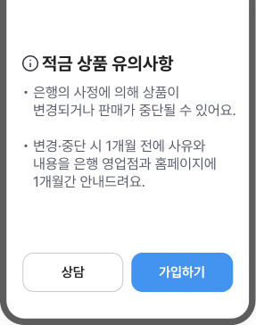
법령 용어를 고객에게 익숙한 표현으로 풀어 써서
해석
없이 이해할 수 있도록 돕습니다.
같은 의미는 같은 표현으로 씁니다.
-
같은 기능, 상태, 행동은 같은 용어로
표현합니다.
일관성을 위하여 반복되는 표현은 화면이 달라도 정해둔 한 가지 용어로 씁니다[6].
-
뜻이 비슷한 말은 상황에 따라 구분하여
씁니다.
신청, 가입, 등록, 개설처럼 뜻이 비슷한 말은 쓰임이 서로 다르므로, 상황에 맞는 용어를 씁니다[6].
-
종결어미를 기준에 맞게 통일합니다.
어미와 구조가 달라지면 다른 서비스처럼 느껴지므로, 같은 상황에서는 동일한 어미와 구조로 작성합니다[7].
-
숫자, 날짜, 금액 표기를 통일합니다.
표기 방식이 혼재되면 같은 정보도 다르게 보이므로 숫자, 날짜, 금액, 단위는 일관된 형식으로 표기합니다[8].
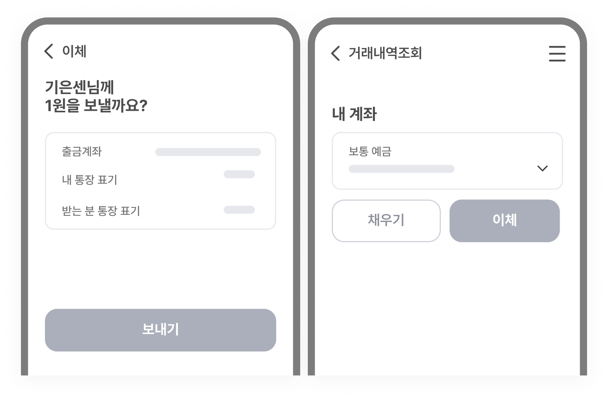
이체 기능은 같은데 버튼 문구가 화면마다 달라서
고객이
같은 기능으로 인식하기 어렵습니다.
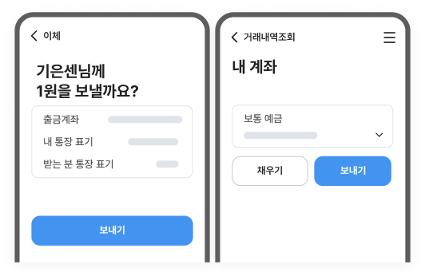
'보내기'로 통일하여 고객이 어느 화면에서나
같은
기능임을 알 수 있도록 돕습니다.
작성 전 확인 포인트
고객이 바로 이해할 수 있고, 같은 표현으로 일관되게 작성됐나요?
- 전문용어, 금융용어를 고객이 이해할 수 있는 말로 풀어썼나요?
- 복잡한 절차를 한 번에 한 단계씩 설명했나요?
- 종결어미와 숫자, 날짜 표기 방식을 기준에 맞게 통일했나요?
- 같은 기능, 상태, 행동은 같은 표현으로 통일했나요?
- [1] U.S. Securities and Exchange Commission. (1998). A Plain English Handbook: How to Create Clear SEC Disclosure Documents. SEC.
- [2] Shneiderman, B., Plaisant, C., Cohen, M., Jacobs, S., Elmqvist, N., & Diakopoulos, N. (2016). Designing the User Interface: Strategies for Effective Human-Computer Interaction (6th ed.). Pearson.
- [3] Nielsen, J. (2006). Progressive Disclosure. Nielsen Norman Group.
- ] Budiu, R. (2016, February 14). *The pyramid of trust*. Nielsen Norman Group. https://www.nngroup.com/articles/trust-pyramid/
- [5] Winters, S. (2017). Content design. Content Design London.
- [6] Nielsen Norman Group. (2021). Maintain Consistency and Adhere to Standards. Nielsen Norman Group.
- [7] Podmajersky, T. (2019). Strategic writing for UX: Drive engagement, conversion, and retention with every word. O'Reilly Media.
- [8] Nielsen, J. (2007). Show Numbers as Numerals When Writing for Online Readers. Nielsen Norman Group.
판단을 돕는 정보 제공하기
IBK기업은행은 고객이 스스로 선택할 수 있도록 필요한 정보를
먼저 제공합니다.
핵심 정보는 앞에 쓰고, 혜택만 강조하지 않고 유의할 점도
함께 안내합니다. 필수 고지는 유지하되, 업무의 목적과
리스크 정도에 따라 설명의 양을 조절합니다.
왜 이 원칙이 중요할까요?
고객 유형에 따라 화면에서 알고 싶은 정보와 하려는 행동이 다릅니다. 고객 유형에 맞게 문구를 쓰면, 불필요한 혼란과 문의를 줄일 수 있습니다[1].
단순 조회와 상품 가입·해지는 고객이 감수해야 할 리스크가 다릅니다. 화면에 맞게 정보 밀도를 조절하면 중요한 정보가 묻히지 않고 고객의 판단을 도울 수 있습니다[2].
약관, 고지 문구는 임의로 바꾸기 어렵지만 보조 설명을 더하면 고객이 별도의 해석 없이도 핵심을 이해하고 판단할 수 있습니다[3].
판단에 필요한 필수 정보를 빠짐없이 씁니다.
-
원문 유지가 필요한 문구는 임의로 바꾸지
않습니다.
약관, 고지, 법적 문구처럼 승인된 표현은 그대로 유지하고, 고객이 확인해야 할 핵심만 안내로 보완합니다[3].
-
문구의 수정 가능 범위를 먼저 구분합니다.
원문 유지, 제한적 변형, 보조 설명, 준법 검토 필요 영역을 구분하여 문구별로 적용 방식을 다르게 정합니다.
-
필수 고지는 요약 문구와 도움말로 이해를
보완합니다.
원문을 유지하되 핵심 조건, 예외, 주의사항은 요약 문구, 괄호 설명, 툴팁, 도움말로 함께 안내합니다[4].
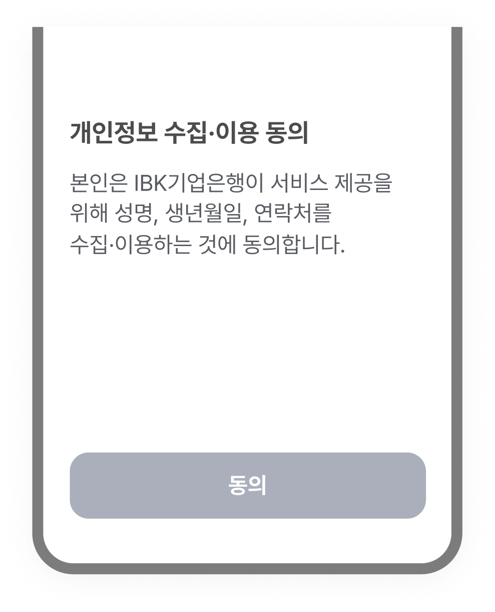
약관 문구만 있고, 보조 설명이 없어서
왜 이
동의가 필요한지 알기 어렵습니다.
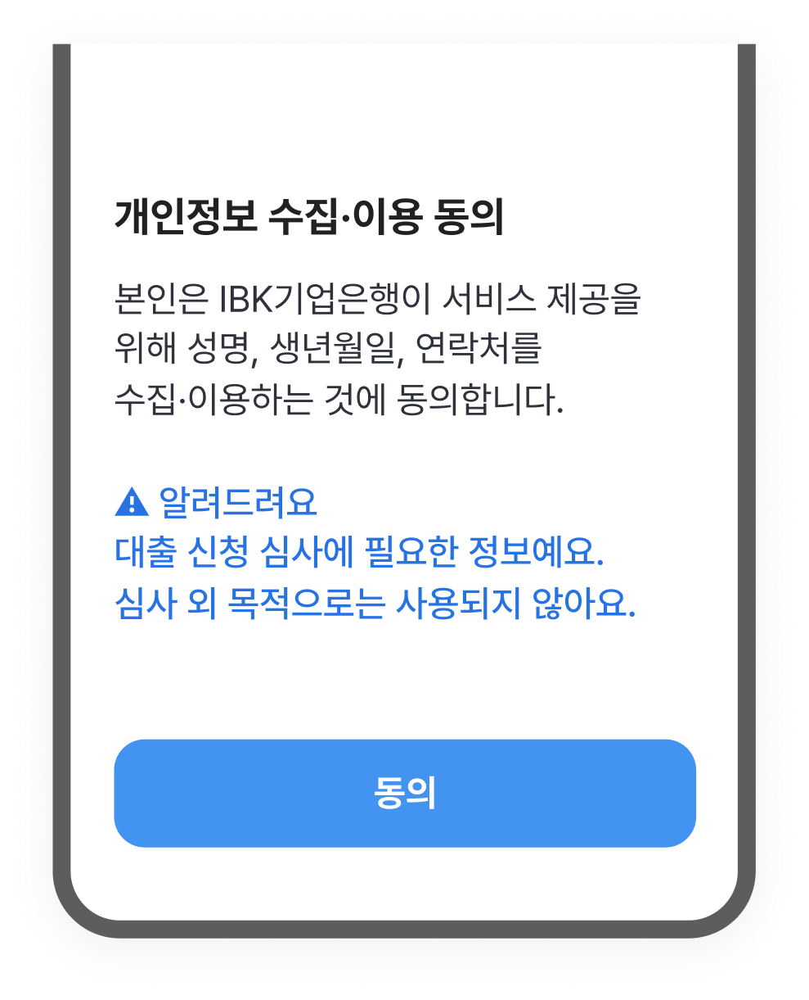
원문을 유지하되, 보조 설명을 추가하여
고객이
동의 목적과 범위를 이해할 수 있도록 돕습니다.
선택에 영향을 주는 핵심 정보를 문장 앞에 씁니다.
-
고객의 선택에 영향을 주는 결과와 조건을 먼저
제시합니다.
고객은 화면을 빠르게 훑어보며 필요한 정보를 찾기 때문에, 의미와 다음 행동을 판단할 수 있는 핵심 정보를 앞에 씁니다[5].
-
금액과 기한은 특히 문장 맨 앞에 씁니다.
금액과 기한은 금융 의사결정의 기준이므로, 문장 앞에 써서 고객이 혼란 없이 빠르게 판단하도록 돕습니다[6].

핵심 조건 없이 행동만 요청하여
고객이 어떤
결과가 생길지 모른 채 진행합니다.
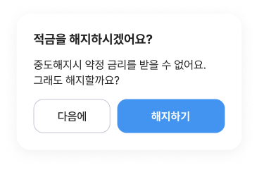
선택에 영향을 주는 조건을 써서
고객이 결과를 미리 알고 판단할 수 있도록 돕습니다.
작성 전 확인 포인트
고객이 핵심 내용을 충분히 이해한 상태에서 선택할 수 있도록 썼나요?
- 바꾸기 어려운 법령·고지 문구는 쉬운 보조설명을 함께 썼나요?
- 약관과 고지 문구를 읽고, 고객이 본인에게 미치는 영향을 이해할 수 있나요?
- 고객이 선택하기 전에 알아야 할 조건과 결과를 먼저 확인할 수 있나요?
- 금액, 기한, 조건 같은 핵심 정보를 먼저 제시했나요?
- [1] Shneiderman, B., Plaisant, C., Cohen, M., Jacobs, S., Elmqvist, N., & Diakopoulos, N. (2016). Designing the user interface: Strategies for effective human-computer interaction (6th ed.). Pearson.
- [2] Sweller, J. (1988). Cognitive load during problem solving: Effects on learning. Cognitive Science, 12(2), 257–285. https://doi.org/10.1207/s15516709cog1202_4
- [3] U.S. Securities and Exchange Commission. (1998). A plain English handbook: How to create clear SEC disclosure documents. Office of Investor Education and Assistance. https://www.sec.gov/pdf/handbook.pdf
- [4] Ben-Shahar, O., & Schneider, C. E. (2011). The failure of mandated disclosure. University of Pennsylvania Law Review, 159(3), 647–749. https://scholarship.law.upenn.edu/penn_law_review/vol159/iss3/2/
- [5] Nielsen, J. (2006). F-Shaped Pattern For Reading Web Content. Nielsen Norman Group.
- [6] Schade, A. (2018). Inverted Pyramid: Writing for Comprehension. Nielsen Norman Group.
명확히 안내하기
IBK기업은행은 고객에게 현재 상태와 다음 행동을 분명히 알
수 있도록 안내합니다.
진행 단계와 결과를 먼저 알려 고객이 불안하지 않도록
합니다. 오류가 발생하면 원인과 해결 방법을 함께 안내하고,
필요시 다른 방법을 제시합니다.
왜 이 원칙이 중요할까요?
대상, 조건, 기준이 분명하면 고객은 문구의 의미를 따로 해석하지 않아도 현재 상황을 바로 이해할 수 있습니다[1].
현재 단계와 남은 절차를 명확히 안내합니다. 고객이 상황을 알고 진행하면 불안을 줄일 수 있고, 다음 단계로 자연스럽게 이어갈 수 있습니다[2].
오류 발생 시, 원인과 해결 방법이 함께 안내하면 고객은 현재 상황을 이해하고 해결 방법을 진행할 수 있습니다[3].
안내의 대상과 적용 조건을 구체적으로 씁니다.
-
중의적이거나 모호한 표현을 줄이고 명확하게
작성합니다.
해석이 달라질 수 있는 표현은 대상, 조건, 기준이 드러나도록 구체적으로 씁니다[4].
-
의미 단위로 나누어 안내합니다.
고객 유형, 계좌 종류, 거래 금액 등 안내 사항이 여러 개일 때는 고객이 하나의 내용으로 이해할 수 있는 단위로 나누어 씁니다[5].
-
여러 단계로 이어지는 안내는 현재 진행중인 단계를
함께 제시합니다.
신청, 심사, 완료처럼 단계가 있는 화면에서는 전체 단계를 보여주고, 그중 현재 단계를 표시합니다[6].
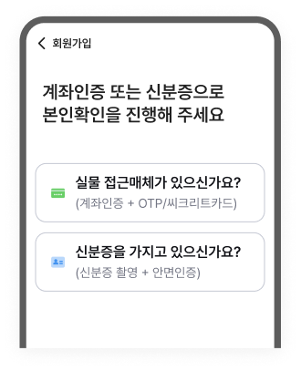
'실물 접근매체'처럼 모호한 표현을 써서
선택지만으로는
고객이 무엇을 선택해야 할지 알기 어렵습니다.

인증 수단을 구체적으로 써서 선택지만으로도
고객이
어떤 수단으로 인증할지 바로 알 수 있도록 돕습니다.
오류 발생 시 상태, 원인, 해결 방법을 명확히 안내합니다.
-
오류 상태를 먼저 알려줍니다.
고객이 진행 중인 절차가 완료되지 않았는지, 중단되었는지, 다시 시도할 수 있는지 먼저 알 수 있도록 상태를 명확히 안내합니다[2].
-
오류 원인을 시스템 언어가 아닌 고객의 언어로
설명합니다.
에러코드나 시스템 사유 대신 입력 정보 불일치, 인증 실패, 조회 기간 초과, 권한 제한처럼 고객이 이해할 수 있는 원인을 씁니다[7].
-
해결 방법과 대체 선택지를 함께
제시합니다.
해결에 필요한 행동을 함께 안내하고, 바로 해결이 어려우면 다시 시도할 방법이나 문의처를 함께 알려줍니다[8].
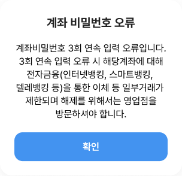
오류 원인과 제한 내용을 한 문장에 함께 써서
고객이 현재 어떤 상태인지 명확히 파악하기
어렵습니다.
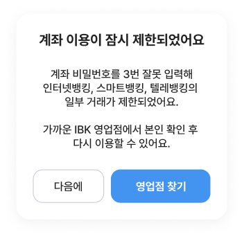
오류 상태를 먼저 쓴 뒤, 원인과 해결 방법을
안내하여
고객이 상황을 이해하고 무엇을 해야
하는지 알 수 있도록 돕습니다.
작성 전 확인 포인트
고객이 다음에 무엇을 해야 하는지, 어떻게 해결할 수 있는지 알 수 있게 썼나요?
- 신청, 심사, 완료처럼 단계가 있는 화면에서는 전체 흐름 중 지금 어느 단계이고, 어떻게 진행되고 있는지 함께 알려줬나요?
- 고객이 다음에 무엇을 해야 하는지 분명히 알 수 있도록 썼나요?
- 오류가 났을 때, 시스템 메시지가 아니라 고객이 이해할 수 있는 말로 원인을 알려줬나요?
- 오류 화면에서 고객이 해결할 수 있는 방법이나 대체 선택지를 함께 안내했나요?
- [1]이태준. (2015). 금융공시정보의 독해용이성이 금융의사결정의 질에 미치는 효과: 금융소비자의 인지적 반응을 중심으로. PR연구, 19(3), 131–156. https://doi.org/10.15814/jpr.2015.19.3.131
- [2] Sherwin, K. (2014, October 26). Progress indicators make a slow system less insufferable. Nielsen Norman Group. https://www.nngroup.com/articles/progress-indicators/
- [3] Nielsen, J. (1994, April 24). 10 usability heuristics for user interface design. Nielsen Norman Group. https://www.nngroup.com/articles/ten-usability-heuristics/
- [4]Wang, H.-H. (2025). Few Guesses, More Success: 4 Principles to Reduce Cognitive Load in Forms. Nielsen Norman Group. https://www.nngroup.com/articles/4-principles-reduce-cognitive-load/
- [5] Moran, K. (2016, March 20). How chunking helps content processing. Nielsen Norman Group. https://www.nngroup.com/articles/chunking/
- [6] Harley, A. (2018, June 3). Visibility of system status (Usability heuristic #1). Nielsen Norman Group. https://www.nngroup.com/articles/visibility-system-status/
- [7] Moran, K. (2019, September 27). Usability heuristic 9: Help users recognize, diagnose, and recover from errors [Video]. Nielsen Norman Group. https://www.nngroup.com/videos/usability-heuristic-recognize-errors/
- [8] Neusesser, T., & Sunwall, E. (2023, May 14). Error-message guidelines. Nielsen Norman Group. https://www.nngroup.com/articles/error-message-guidelines/
- [9] Shneiderman, B., Plaisant, C., Cohen, M., Jacobs, S., Elmqvist, N., & Diakopoulos, N. (2016). Designing the user interface: Strategies for effective human-computer interaction (6th ed.). Pearson.
상황에 맞게 전달하기
IBK기업은행은 고객이 이용하는 상황과 채널에 맞춰 필요한
정보를 정확하고 알기 쉽게 전달합니다.
채널 특성에
따라 문장의 길이와 정보량을 조절하고, 같은 목적의 메시지는
일관된 표현으로 제공하여 고객이 어떤 채널에서도 쉽게
이해할 수 있도록 합니다.
왜 이 원칙이 중요할까요?
고객의 상황과 채널에 따라 설명의 깊이는 달라집니다. 핵심 정보는 빠뜨리지 않고, 고객이 이해하고 행동하는 데 필요한 내용을 충분히 담습니다[1].
문자, 푸시, 알림톡 같은 발송 메시지는 첫 줄만 보고 넘기기 쉽습니다. 발신 목적과 해야 할 행동을 첫 문장에 써야 바로 이해할 수 있습니다[2].
작성 부서가 달라도 메시지는 같은 구조로 전달합니다. 일관된 구조는 고객 이해를 돕고, 반복 문의를 줄입니다[3].
고객과 상황에 맞춰 필요한 정보를 전달합니다.
-
반복되는 화면에서는 핵심 정보만 간결하게
씁니다.
조회, 확인처럼 반복되는 화면에서는 부가 설명을 줄이고 핵심 정보를 중심으로 안내합니다[4].
-
개인 고객에게는 이해를 돕는 설명을
제공합니다.
개인 고객의 정보 비교와 판단을 돕기 위하여 상품, 제도의 의미와 조건을 풀어서 안내합니다[5].
-
기업 고객에게는 처리에 필요한 정보를 간결하게
전합니다.
기업 고객은 업무 처리에 집중하므로, 가능 여부, 필요 조건, 처리 절차를 간결하게 안내합니다[5].
-
신중한 판단이 필요한 화면에서는 조건과 영향을 더
자세히 안내합니다.
대출, 해지, 고액 송금처럼 결정 부담이 큰 화면에서는 조건과 결과를 충분히 설명합니다[6].

개인 고객과 기업 고객에게 같은 내용을 안내하면,
고객별로
필요한 조건과 다음 행동을 알기 어렵습니다.
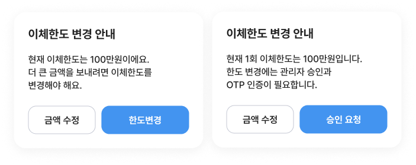
개인 고객에게는 변경이 필요한 경우를 구체적으로,
기업
고객에게는 거쳐야 할 절차를 써서 각자 필요한 판단을
하도록 돕습니다.
채널에 맞는 구조로 작성합니다.
-
목적과 주체를 첫 문장에 먼저 씁니다.
‘광고’, ‘안내’ 등 메시지 목적과 ‘IBK기업은행’ 같은 발신 주체는 첫 문장에 씁니다.
-
핵심 내용, 조건, 행동의 순서로
구성합니다.
무엇을 알리는 메시지인지 먼저 말하고, 금액, 기한, 조건을 정리한 뒤 고객이 해야 할 행동을 안내합니다[2].
-
반복되는 메시지는 일관된 구조로 씁니다.
상환 안내, 정책 변경, 이벤트, 보안 알림처럼 반복적으로 발송되는 메시지는 공통 구조를 적용합니다.
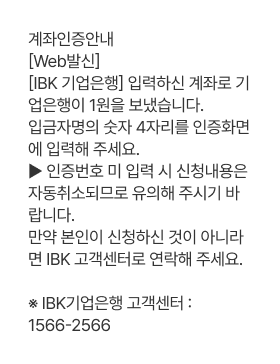
발송 목적과 고객이 해야 할 행동을 본문에 써서
무엇을
먼저 확인하고 입력해야 하는지 알기 어렵습니다.
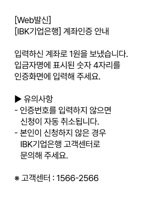
발송 목적, 핵심 내용, 입력할 정보, 유의사항을
순서대로
써서 고객이 바로 이해할 수 있도록 돕습니다.
채널에 맞게 정보의 양과 길이를 조절합니다.
-
글자 수가 제한된 채널에서는 핵심만
남깁니다.
문자, 푸시, 알림톡처럼 글자 수가 제한된 채널에서는 고객이 바로 알아야 할 정보와 행동만 전달합니다[1].
-
첫 줄에는 메시지의 목적과 주요 정보를
씁니다.
푸시는 제목과 첫 줄, 알림톡과 문자는 첫 문장에서 메시지를 받은 이유와 주요 정보를 알 수 있게 씁니다[2].
-
상세 내용은 자세히 볼 수 있는 곳으로
연결합니다.
상세 조건이나 긴 안내는 다 넣지 않고, 핵심만 전한 뒤 앱, 링크, 고객센터처럼 자세히 볼 수 있는 곳으로 연결합니다[2].
예상금액, 재예치, 세금 등 여러 항목을 함께 써서,
고객이
무엇을 확인해야 할지 한눈에 알기 어렵습니다.

채널에 맞게 만기일과 확인해야 할 핵심 항목만
남겨서
고객이 바로 내용을 이해할 수 있도록
합니다.
작성 전 확인 포인트
고객의 유형과 채널의 특성에 맞게 썼나요?
- 고객 유형과 채널에 맞게 정보의 밀도를 조절했나요?
- 반복적으로 발송되는 메시지는 일관된 형식과 표현으로 썼나요?
- 문자, 푸시, 알림톡처럼 글자 수가 제한된 채널에는 핵심만 썼나요?
- 푸시나 문자처럼 첫 줄만 먼저 보이는 메시지도 목적이 바로 드러나나요?
- [1] Kendrick, A. (2018, November 18). Five mistakes in designing mobile push notifications. Nielsen Norman Group. https://www.nngroup.com/articles/push-notification/
- [2] Liu, F. (2024, February 7). Transactional notification 101 [Video]. Nielsen Norman Group. https://www.nngroup.com/videos/transactional-notification/
- [3] Nielsen, J. (1994, April 24). 10 usability heuristics for user interface design. Nielsen Norman Group. https://www.nngroup.com/articles/ten-usability-heuristics/
- [4] Nielsen, J. (2006, December 3). Progressive disclosure. Nielsen Norman Group. https://www.nngroup.com/articles/progressive-disclosure/
- [5] Shneiderman, B., Plaisant, C., Cohen, M., Jacobs, S., Elmqvist, N., & Diakopoulos, N. (2016). Designing the user interface: Strategies for effective human-computer interaction (6th ed.). Pearson.
- [6] Sweller, J. (1988). Cognitive load during problem solving: Effects on learning. Cognitive Science, 12(2), 257–285. https://doi.org/10.1207/s15516709cog1202_4